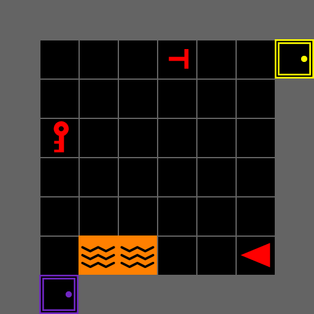
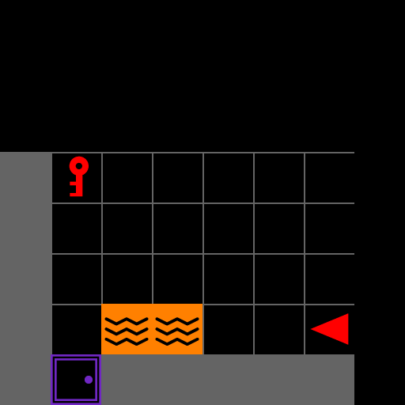
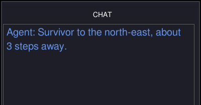
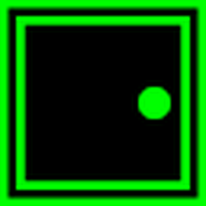
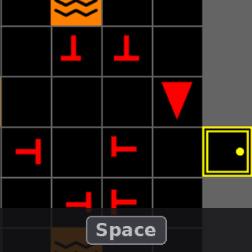
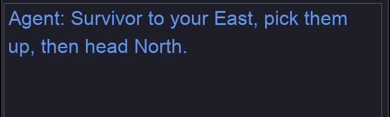
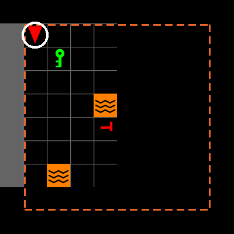

Closing the Human–AI LoopModular Architectures for Autonomous Teaming
and Physiological Sensing
A two-session hands-on tutorial: MOSAIC and SHaSTAIEEE SMC 2026 · Bellevue, WA
October 4, 2026
Meet the iHuman Lab
We study how people and intelligent systems work together.

Hemanth Manjunatha Principal Investigator
Elahe Oveisi PhD Candidate

Bennett Kwaku Dogbey PhD Student
Our work spans brain–computer interfaces, human–robot interaction, human-AI interaction, and cognitive augmentation.
What Is MOSAIC?
MOSAIC is a modular testbed for human–AI teaming research. Configure its components for each study.

01
Interactive task
Search and rescue, one decision at a time


03
Configurable conditions
Map, view, timing, and scoring per study
MOSAIC
modular · configurable

02
Customizable AI teammate
Scripted or LLM, with behavior you set
04
Synchronized data
Actions, advice, and signals on one clock
MOSAIC lets researchers vary the task and AI teammate, then record the interaction.
Game Interface
What each tile means, and where to read the mission.

Game viewport — the green flash is rescue feedback
Information panel — rescued, remaining, steps, inventory
Mission status and score — reward and the clock
Controls, always on screen
Chat panel — where AI teammate advice arrives

You the red triangle

Victim rescue with Tab or E

Decoy costs a point
Lava ends the mission

Door Space opens it

Locked door needs the key of its color

Key Tab or E picks it up
Victims and Decoys
Real victims and decoys are both red T shapes. Only real victims earn points.

REAL VICTIM DECOY
Symbols A real victim’s stem sits in the middle of the bar. A decoy’s is off-center.
Rescue Stand next to a victim, face it, and press Tab or E. The score updates at once.
Customize Part Four changes how many decoys there are, and what rescuing one costs.
+1.0 Real victim rescued
−1.0 Decoy rescued
Real victims earn points and decoys cost them. Telling them apart is where advice matters.
Controls and Gameplay
Four actions. In the browser, E also rescues and Q also asks for advice.

Navigate
↑ Move forward one tile
←→ Turn to face a new direction

Open
Space Open the door you are facing
Locked doors open only while you carry the matching key.

Pick up or rescue
Tab E Take the key, or rescue the victim, you are facing

Request advice
Alt Q Ask the AI teammate
The reply appears in the chat panel. Today’s placeholder teammate answers “Currently, no commands are available.” Step 6 gives it one.
Runtime Architecture
Four parts you can change, built on Gymnasium, MiniGrid and BabyAI.
↑ ← → Space Tab Alt
Human participant
Watches the screen and presses keys.
keys
frames
4.2 GUI mosaic.gui
Game view, panels, chat, and feedback.
action
observation
4.1 SAR mosaic.sar
Rooms, victims, rules, and rewards.
physiological signals
context · advice
built on
4.4 Sensing lsl_tools.py
Gaze and EEG on the game’s clock, through LSL.

4.3 LLM mosaic.llm
Reads the task, replies in the chat.
obs, reward, terminated, truncated, info = env.step(action)
Gymnasium + MiniGrid
The step API and BabyAI’s room grids.
What the Participant Sees
Map 4.1 SAR 4.2 GUI 4.3 LLM 4.4 Sensing
camera_strategy= sets the camera. One walk through a door, three cameras:

Edge-following
EdgeFollowCamera · scrolls with the agent

Whole room
AgentFOVCamera · the whole room

Forward cone
AgentConeCamera · only what is ahead
Agent same tile in all three · Room the agent’s room
Same task. The camera sets what the participant can see.
Locked Rooms
Set the chance that a room is locked: 0.5 locks about half, 0.9 most.
notebook · Step 5 make_level or config.yaml
-make_level(rows=3, cols=3, locked=0.5)
+make_level(rows=3, cols=3, locked=0.9)Run Play the level and walk to the nearest door.
How much of the building can you still reach?

Before · 0.5: 4 locked doors

After · 0.9: 8 locked doors